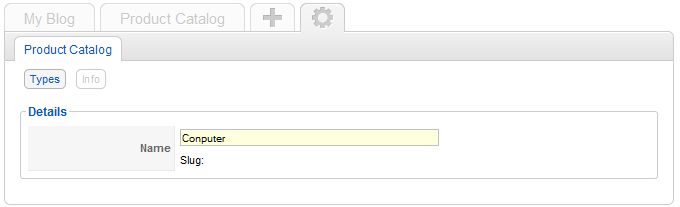
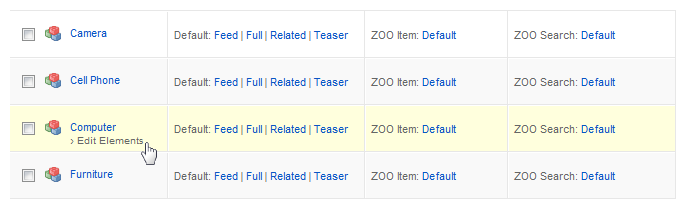

Learn how to create a new item type for an app in your ZOO. You will learn how you add elements to the type and assign them to template layout positions.
Login to your Joomla and open the ZOO backend. Click on the little gearwheel on the right side of the tab bar. You will see all installed apps. Simply click on the app for which you want to create a new type.

On the next screen you see a list of all pre-build types, that come with this app. To create a new one, click on the New button in the top right corner.

Give the new type a name and click on Save in the top right corner
You see, that the new type appears in the list of types. Now we have to add the elements to the type. To do so, hover the type and click on Edit Elements that appears underneath the name.
Now you see a blank space on the left, where the elements will appear later and on the right you see a list of all elements, that can be used to build your type. They are structured into groups, like form-, media- or social elements.

To add a new one to the type, choose the element you want to add from the list of available elements on the right side and simply click on it. The element will automatically be added to the list on the left, ready to be configured. Please see our tutorials for the elements to see the different configurations of each element.

The order of the elements on the left is the order they appear when you create an item of this type. So if you not want to have the new added element right on the top of the list, you can change it very easily. Just move your cursor over the small brick icon in front of the element and drag&drop the whole element to its new position. Very easy. By clicking the small pencil icon next to each used element, a small form slides out and you can configure this element and of course you can delete an element by clicking the small delete icon next to the pencil icon.
After you've set up the type, click on Save in the top right corner. Now you can create new items of the new type but to show the items to your visitors in the frontend of your site, you have to {doc: assign-elements-to-layout-positions text: assign the elements to their layout positions}.